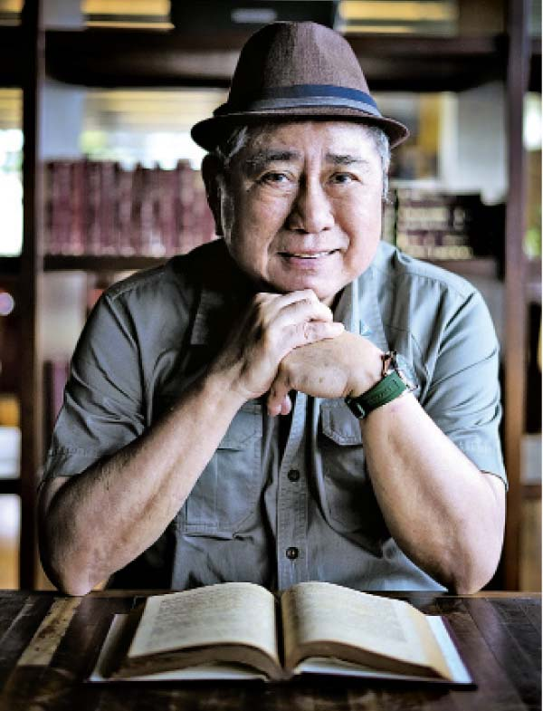

Si Virgilio S. Almario (na kilala sa sagisag-panulat na Rio Alma) ay isang Pambansang Alagad ng Sining ng
Pilipinas sa Panitikan, isang masaganang makata, historyador ng panitikan, at
tagapangasiwang pangkultura na may malalim na impluwensya sa paghubog ng makabagong
panitikang Pilipino at ng wikang pambansa
upang malaman ang higit pa, pumunta sa pahinang "tungkol sa kanya"